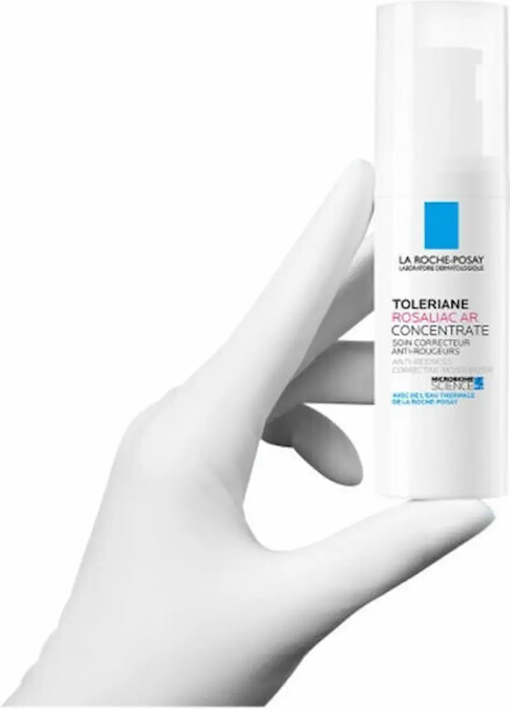
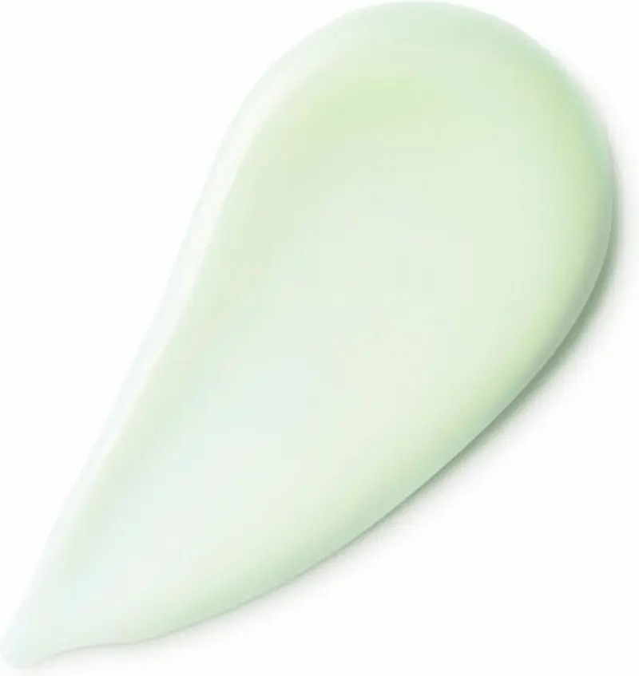

La Roche-Posay Toleriane Rosaliac AR: Soluția intensivă împotriva roșeții și a cuperozei
Recenzie independentă. Produsul nu este sponsorizat.
Analizăm modul în care acest concentrat inovator, bazat pe tehnologia Sphingobioma și Neurosensină, acționează direct asupra sursei inflamației pentru a reduce vizibil roșeața, a calma senzația de arsură și a preveni reapariția episoadelor de flushing, oferind echilibru și confort tenului vascular.

La Roche-Posay Toleriane Rosaliac AR
Concentrat intensiv calmant, creat special pentru pielea predispusă la cuperoză și rozacee. Analizăm modul în care combinația unică de Sphingobioma și Neurosensină acționează asupra sursei roșeții, eliminând instantaneu senzația de arsură și prevenind reapariția episoadelor de iritație. Produsul fortifică bariera protectoare și normalizează microbiomul pielii, redând feței o nuanță uniformă, un confort de durată și rezistență în fața agresorilor externi din mediul urban.
De ce merită atenția acest produs?
La Roche-Posay Toleriane Rosaliac AR este un produs conceput special pentru pielea predispusă la roșeață și cuperoză. Formula ajută la reducerea reactivității pielii și la întărirea vaselor de sânge, diminuând vizibil roșeața.
Datorită ingredientelor calmante și texturii ușoare, produsul se absoarbe rapid, nu încarcă pielea și este potrivit pentru utilizare zilnică. Este ideal pentru pielea sensibilă care reacționează la frig, vânt sau schimbări de temperatură.


Textura și prima utilizare
Spre deosebire de cremele onctuoase, Toleriane Rosaliac AR are o textură de gel fluid, lejeră și răcoritoare, care se absoarbe instantaneu. Aceasta a fost creată special pentru tenul vascular, pentru a calma imediat senzația de „față care arde” și pentru a nu lăsa un strat gras care ar putea accentua disconfortul termic.
Imediat după aplicare, senzația de arsură și tensiunea cutanată se diminuează semnificativ. Datorită pigmenților corectori fini, produsul neutralizează vizual roșeața încă de la prima utilizare, oferind un aspect uniform și liniștit tenului.
Analiza compoziției: Ce conține?
Formula este minimalistă și hipoalergenică, fără parfum sau alcool. Piesa centrală este inovația Sphingobioma, un extract bacterian care restabilește echilibrul microbiomului, reducând reactivitatea pielii și prevenind inflamația cronică.
Acțiunea anti-roșeață este susținută de Neurosensină, un ingredient calmant activ care blochează semnalele de durere la nivelul terminărilor nervoase, și de Apa Termală La Roche-Posay, recunoscută pentru proprietățile sale anti-iritante și antioxidante esențiale pentru protecția vaselor de sânge.
Eficiență anti-recidivă și protecție
Diferența majoră a Toleriane Rosaliac AR este capacitatea sa de a preveni reapariția roșeții (efect anti-recidivă). Ambalajul ultra-ermetic cu pompă vacuum previne oxidarea formulei și contaminarea cu bacterii, menținând puritatea ingredientelor până la ultima picătură.
Produsul oferă o hidratare optimă, restabilind bariera de protecție adesea fragilizată în cazul rozaceei. Este soluția ideală pentru locuitorii din București sau alte orașe mari din România, unde poluarea urbană și apa dură sunt factori declanșatori majori pentru episoadele de flushing și iritație vasculară.
Analiza compoziției: Cum oprește concentratul roșeața?
Formula este special concepută pentru a fi ultra-tolerantă, reducând riscul de iritare a vaselor de sânge. Jucătorul cheie este Neurosensina, o peptidă calmantă care „deconectează” senzarea de arsură și prurit, reducând reactivitatea terminațiilor nervoase hipersensibile.
Inovația Sphingobioma™ restabilește echilibrul microbiomului, un aspect critic pentru tenul cuperozic. Un microbiom stabil ajută pielea să își regleze singură inflamația și să prevină episoadele de flushing (înroșire bruscă) cauzate de triggeri externi sau stres.
Cui NU i se potrivește?
Toleriane Rosaliac AR este un concentrat intensiv pentru față, destinat specific roșeții vasculare. Deși textura sa de gel fluid este potrivită pentru toate tipurile de ten, persoanele cu ten extrem de uscat ar putea simți nevoia de o cremă hidratantă suplimentară aplicată peste acest concentrat pentru un confort sporit.
Dacă te confrunți cu acnee vulgară severă (fără componentă vasculară/roșeață difuză), este mai eficient să optezi pentru gama Effaclar. Rosaliac AR se concentrează pe calmarea vaselor de sânge, nu pe reglarea excesului de sebum sau eliminarea punctelor negre.
Lifehack: Metoda „Anti-Shock Termic”
Pentru a maximiza efectul de calmare în timpul unui episod de căldură, păstrează flaconul de Toleriane Rosaliac AR în frigider. Aplicarea gelului rece va provoca o vasoconstricție ușoară, ajutând la retragerea rapidă a sângelui din capilarele dilatate.
De asemenea, datorită texturii lejere și a pigmenților corectori fini (nuanță ușor verzuie), produsul funcționează excelent ca bază corectoare sub machiaj. Acesta neutralizează vizual zonele roșii de pe obraji și nas, permițând utilizarea unei cantități mai mici de fond de ten sau corector.
Unde poți găsi La Roche-Posay Toleriane Rosaliac AR?
Dacă ești în căutarea unui produs pentru pielea sensibilă și predispusă la roșeață, La Roche-Posay Toleriane Rosaliac AR poate fi găsit în farmacii și magazine online din Romania.
Verifică disponibilitatea și prețul*Linkul este oferit în scop informativ. În cazul unui parteneriat, aici va fi plasat link direct către produs.
Întrebări frecvente
Ajută această cremă în cazul reacțiilor alergice și al senzației de arsură?
Da, acesta este rolul său principal. Datorită Neurosensinei, crema calmează instantaneu senzația de arsură, furnicăturile și reduce roșeața caracteristică pielii alergice și reactive.
Poate fi utilizat Toleriane Dermallergo în jurul ochilor?
Da, formula este concepută special pentru utilizarea pe față, inclusiv pe zona delicată a ochilor. A fost testată pe pielea ultra-sensibilă și pe mucoase, fiind o alegere absolut sigură.
Este potrivită această cremă pentru tenul gras, dar sensibil?
Absolut. Crema are o textură lejeră, non-grasă și nu blochează porii (este non-comedogenică). Oferă hidratare și un efect de calmare fără a lăsa o senzație de greutate pe ten.
Cât de repede reduce roșeața și disconfortul?
Studiile clinice arată că produsul oferă un efect de calmare imediat, la doar câteva minute după prima aplicare. Prin utilizare regulată, aceasta reduce sensibilitatea pielii zi după zi.